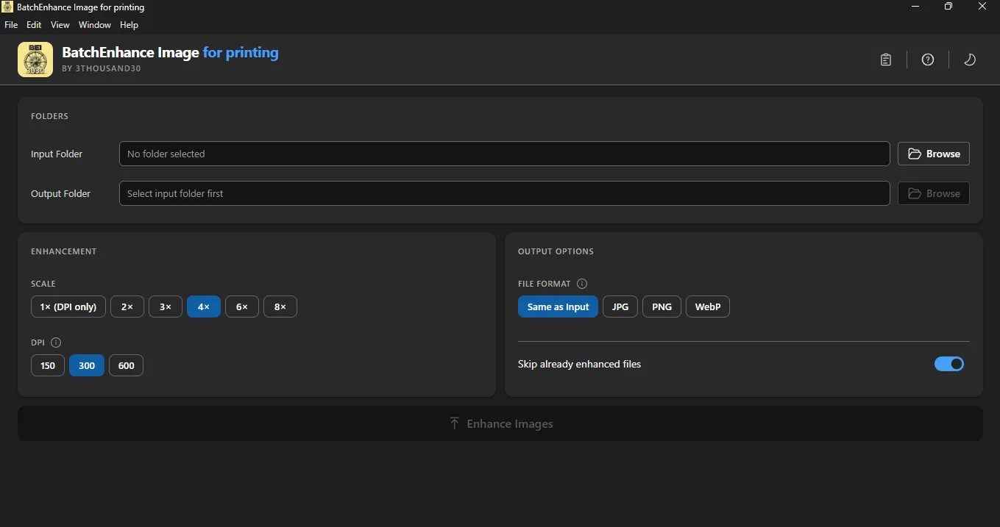
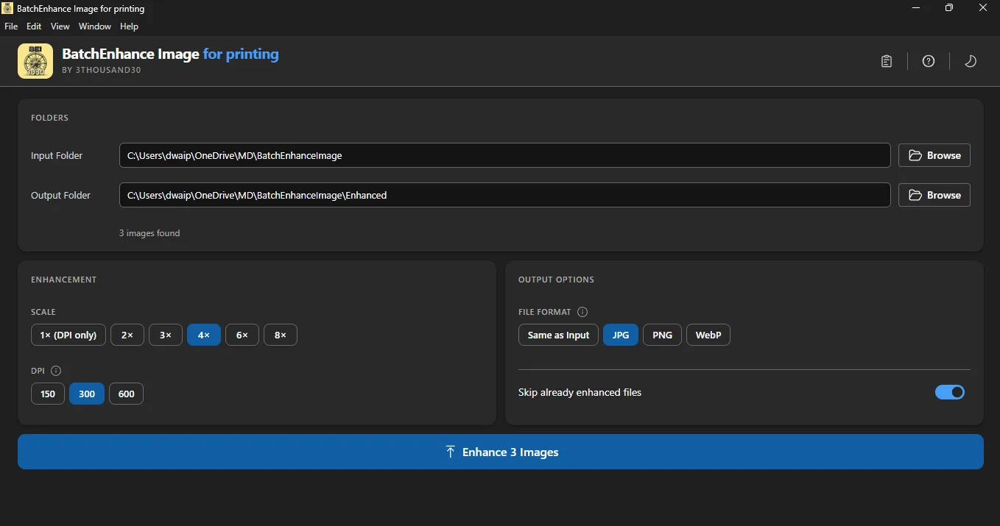
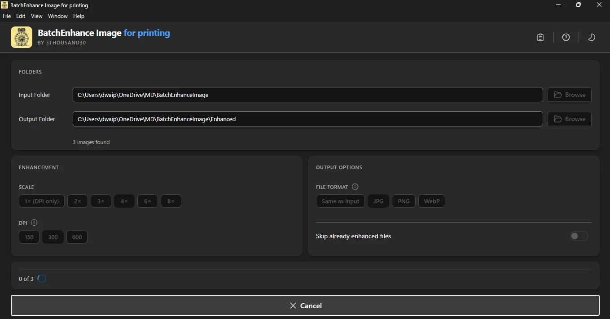
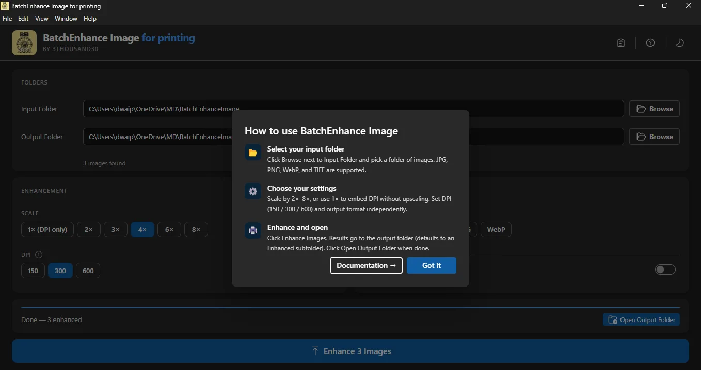
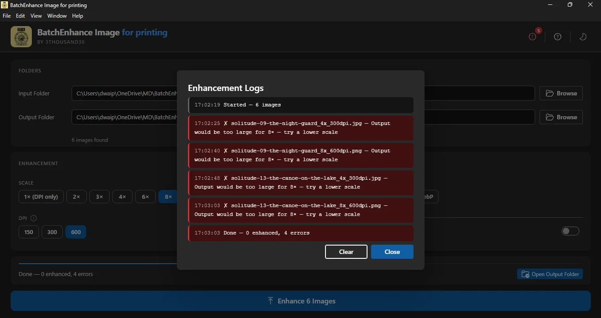

products / BatchEnhance Image
BatchEnhance Image
Upscale images in bulk for print, posters, books, and physical products. Fully local.
* Microsoft Store prices vary by country/region; the amount shown is the US price.
Point at a folder, choose scale and DPI, and enhance the full batch. Built for print creators, photobook makers, poster workflows, and anyone who needs quality upscaling without cloud dependency. Lanczos3 resampling with post-upscale sharpening keeps fine detail intact.
screenshots





what_it_does
who_its_for
Print-focused creators
For people preparing images for posters, books, art prints, and other physical outputs where resolution and DPI matter.
Photobook and artifact workflows
A strong fit when a larger image batch has already been selected and the next step is making it more suitable for real-world printing.
People who want offline prep
Works well for users who do not want cloud upscalers, accounts, subscriptions, or telemetry wrapped around print-prep work.
best_paired_with
BatchGen Image with AI
Generate the exploratory batch first, shortlist the strong results, then use BEI to push them toward print-ready output.
BatchResize Image
Useful when the batch also needs clean alternate sizes for web previews, social proof, or marketplace-friendly promotional versions.
use_cases
Create a photobook with AI for gifting
See how BEI handles the print-prep stage after image generation, review, and shortlist selection.
Browse all use cases
Use the hub to follow the live photobook route now and the later poster and print-focused use cases when they land.
privacy_and_control
BatchEnhance Image is fully local. There is no cloud dependency, no AI provider setup, no account layer, and no telemetry collecting a record of your print-prep work.
That matters when you are working through large batches of images that represent books, posters, or other sellable outputs and you want the prep pipeline to stay under your control.
faq
Is BatchEnhance Image fully local?
Yes. It is a fully local Windows app with no cloud dependency, no account requirement, and no telemetry.
Is it good for posters, books, and print output?
Yes. It is designed for print-facing image prep, especially where larger output sizes and print-ready DPI matter.
How much can it upscale?
It supports 2x, 3x, 4x, 6x, and 8x upscaling, plus a 1x mode when you only want to embed DPI metadata.
Does it add print-ready DPI metadata?
Yes. You can embed 150, 300, or 600 DPI metadata into the exported files.
What does it pair well with?
It pairs especially well with BatchGen Image with AI for photobooks, posters, and other workflows where image generation comes before print prep.
other_apps

Batch Generate Text
generative · windows
$14.99$19.99-25%

BatchGen Image
generative · windows
$13.99$19.99-30%

Batch Translate
translation · windows
$19.99

BatchFile Organiser
utility · windows
$9.99

BatchWatermark Image
utility · windows
$4.99

BatchCompress Image
utility · windows
$2.99

BatchResize Image
utility · windows
$2.99